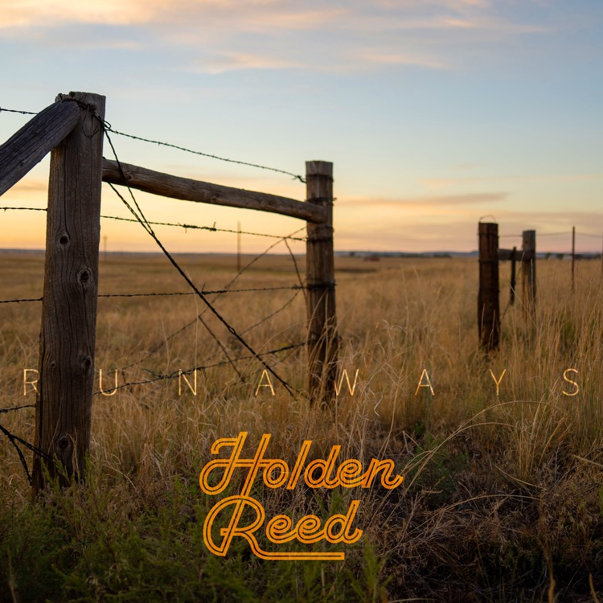

Music
Somewhere in Between EP
Somewhere in Between brings listeners to the dusty backroads and dim bars of its lonesome characters as they navigate the tension between connection and escape.
Runaways EP
Released in October 2024 Runaways tells of a long, rugged journey. At times a melancholic exploration of love and loss on a road that feels both endless and uncertain, it also reveals our natural curiosity and the search for meaning in the simple yet profound experiences of life. 🤘
